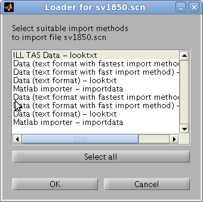
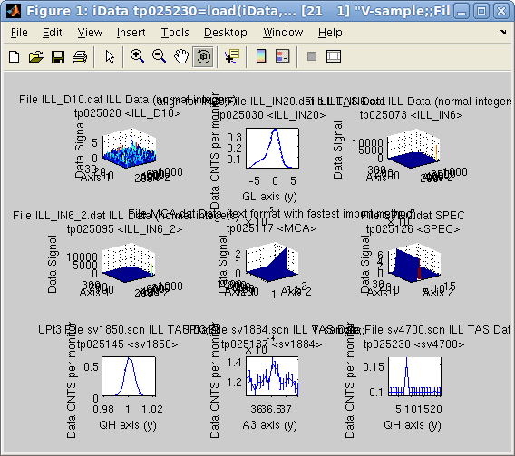
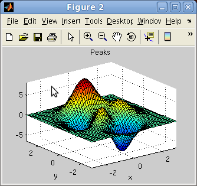

iFit: importing data into objects
- Importing data from a
file (iData,
load)
- Distant files (http://, ...)
- Compressed files (.zip, ...)
- Anchor references (file#anchor)
- Setting Signal and Axes when they are not set properly
- Supported data formats
- Example data files
- Importing directly
from
Matlab variables
- Importing from Matlab
Figures
- How it works
(looktxt, iLoad, Loaders)
Commands we use in this page:
iData, load, methods
In this document we present how to import data as
iData
objects from files, variables and figures. Extensive help about how to
create iData objects and supported file formats can be found in the
Loaders page.
Importing data from a
file (iData,
load)
This is done by converting a file path to an iData
object, or directly
with the
iData/load
method. The ifitpath
points to the iFit library location:
>> a = iData([ ifitpath 'Data/ILL_IN6.dat' ]);
>> a = load(iData, [ ifitpath 'Data/ILL_IN6.dat' ]);
These commands result in the following output, which produce an iData
object:
iLoad: Importing file iFit/Data/ILL_IN6.dat with method ILL Data (normal integers) (looktxt)
looktxt iFit/Data/ILL_IN6.dat --headers --fortran --catenate --fast --binary --makerows=IIII --makerows=FFFF --outfile=/tmp/lk_915264556_CZi4aN
Warning: Data root level renamed as lk_915264556_CZi4aN (started with number).
Output file names are unchanged [looktxt:file_open:1377]
Warning: File 'iFit/Data/ILL_IN6.dat' c='-' [num pos=250] two fortran numbers are touching each other
Warning: File 'iFit/Data/ILL_IN6.dat' c='-' [num pos=2086] two fortran numbers are touching each other
Warning: File 'iFit/Data/ILL_IN6.dat' c='-' [num pos=2086] two fortran numbers are touching each other
Warning: File 'iFit/Data/ILL_IN6.dat' c='-' [num pos=2107] two fortran numbers are touching each other
Warning: File 'iFit/Data/ILL_IN6.dat' c='-' [num pos=2127] two fortran numbers are touching each other
Looktxt: file 'iFit/Data/ILL_IN6.dat': wrote 9 numerical fields into /tmp//lk_915264556_CZi4aN.m
iData: Setting the Signal of tp481575 to the biggest numerical field Data.IIIIIIIIIIIIIIIIIIIIIIIIIIIII_13 with length 131584.
a = iData object:
[Tag] [Dimension] [Title] [Last command] [Label]
tp481575 [257 512] 'File ILL_IN6.dat ILL Data (n...' tp481575=load(iData,...
|
Wildcards (*,?) are supported. The file separator symbol ('/' for
Linux/Unix/MacOSX and '\' for Windows) is automatically adapted to the
system used.
Directory may be imported (and thus all files therein) as well as lists
of files (given as a cell of strings {...})
>> a = iData( [ ifitpath 'Data' ]);
>> a = iData({ [ ifitpath 'Data/*.dat' ] ,...
[ ifitpath 'Data/sv1850.scn' ],...
[ ifitpath 'Data/sv1884.scn' ],...
[ ifitpath 'Data/sv4700.scn' ] });
which returns an array of iData objects.
A file selector,
which supports multiple file selection, may be used by
issuing
>> a = iData('')
>> a = load(iData,'')
The choice of the file selector style can be done in the iLoad configuration (refer to the Loaders page).
By default, an analysis of the file name extension and the file content will be done, and the best
importer method will be used. It is possible to select a preferred method with
e.g.
>> a = load(iData, 'filename', 'HDF5')
>> a = load(iData, 'filename', 'gui'); % a method selector pops-up.
A list of the supported formats is shown below.
The resulting objects will usually be 1D, 2D, 3D, nD histograms or nD event lists. Refer to the iData and Math
page to learn how to manipulate these objects (set, get, setalias, getalias, setaxis, getaxis), and in particular how to
reduce/extend their dimensionality (sum, indexing, ...), or convert events into histograms (hist, interp).
Distant files (http://, ...)
The specified file names may include URL tags such as
- file://filename
- ftp://filename
- http://filename
- https://filename
were the two latter cases first get a copy of the distant file
(requires local write permission), and then import it. A valid Internet
connection is then required, with proper Proxy settings if needed.
Compressed files (.zip, ...)
Compressed files (ZIP, TAR, GZIP, Z) can also be imported directly, in
which case they are first extracted locally (requires write
permission), and then imported. This extraction mechanism also applied for
distant file.
Anchor references (file#anchor)
The file name may end with an anchor reference using the '#' character, such as in
[ ifitpath '/Data/sv1850.scn#Data' ]
'http://path/file.zip#Data'
In this case, the anchor is searched in the imported data, and only the
corresponding matching elements are returned. The resulting objects are
thus smaller in size.
Setting Signal and Axes when they are not set properly
There may be cases for which the reading of the file is done properly,
but the Signal, Error and Axes are set to their default values, that is
the largest numerical block as the Signal, the sqrt(Signal)
as the Error, and simple indices as Axes. In this case it may be
appropriate to customize the appearence of the scientific data set by
setting the Signal, Error aliases, and defining the Axes values.
In order to identify where the Signal and Axes may be stored in the
object, you should start by displaying the Data content of the object:
>> a = iData([ ifitpath 'Data/ILL_IN6.dat' ]);
>> a.Data % displays the whole object Data structure, as read from the file and stored in memory
ans =
RRRRRRRRRRRRRRRRRRRRRRRRRRRRRRRR: [142198 0 1]
AAAAAAAAAAAAAAAAAAAAAAAAAAAAAAAA: [2x1 double]
IIIIIIIIIIIIIIIIIIIIIIIIIIIIIIII: [342x1 double]
IIIIIIIIIIIIIIIIIIIIIIIIIIIIII_3: [1x156 double]
FFFFFFFFFFFFFFFFFFFFFFFFFFFFFFFF: [2x1 double]
FFFFFFFFFFFFFFFFFFFFFFFFFFFFFF_7: [1x384 double]
FFFFFFFFFFFFFFFFFFFFFFFFFFFFF_10: [1x128 double]
IIIIIIIIIIIIIIIIIIIIIIIIIIIII_13: [1x512 double]
SSSSSSSSSSSSSSSSSSSSSSSSSSSSSSSS: [340x4 double]
IIIIIIIIIIIIIIIIIIIIIIIIIIIII_17: [340x1024 double]
Attributes: [1x1 struct]
In this example, we have highligthed in red what we shall use as Signal and Axes. Then, we just define:
>> a.Signal = 'Data.IIIIIIIIIIIIIIIIIIIIIIIIIIIII_17';
which sets the definition of the Signal Alias as a link to the IIIIIIIIIIIIIIIIIIIIIIIIIIIII_17
field in the Data member of the object, of size 340 rows by 1024
columns. Letting the Error to its default empty definition assigns it
to sqrt(this.Signal), but you may define it as a link to a part of the Data, just as for the Signal. The Signal label can optionally be defined as
>> title(a, 'Signal label');
In order to define the Axes, they can be defined similarly as the Signal:
>> a{1} = 'this.Data.SSSSSSSSSSSSSSSSSSSSSSSSSSSSSSSS(:,1)'; % defines the 1st axis as a link to the Data
where we make use of the this
self reference in the link (meaning find in myself), which allows
expressions instead of simple static links as for the Signal. This way
we define the 1st axis as the first column of the SSSSSSSSSSSSSSSSSSSSSSSSSSSSSSSS field. It should have the proper dimension, in this example 340.
In this example, the second Axis of this 2d object has is not part of
the Data. We may then define it as a numerical value with e.g.
>> a{2} = linspace(0.001, 0.003, 1024);
which is a 1024 element vector from 1 to 3 ms. The Axis labels can be set with e.g.:
>> label(a, 1, 'angle channel [1]')
>> label(a, 2, 'tof [ms]')
The final object is now fully described, and ready to be plotted, fitted, and tortured...
Supported data formats
In principle, any text based file is loaded transparently (see below). Binary files require a dedicated
wrapper, but many formats are supported. In some case, additional axis
definition specific to the format will be applied.
The list of available methods is usually stored in the iFit/Librarires/Loaders/iLoad_ini.m
file,
and can be obtained from the iLoad function
>> iLoad('formats'); % or: iData('formats')A local iLoad.ini
configuration file may be stored in the Matlab
Preferences directory, which
then overrides the system default (refer to the iLoad configuration help page).
The current supported format list is (details in Loaders):
- any Data in text format
- ILL Data (most instruments at the ILL)
- ILL TAS Data (polarized or not)
- Chalk River CNBC NRU data, including multi-wire and polarized data
- SPEC ESRF
- McStas (Scan DAT output, 1D, 2D monitor, event lists, sim file, Sqw, LAZ, LAU tables)
- ISIS/SPE tof data (see Horace and LibISIS)
- INX tof data (ILL processed TOF)
- ESRF data format (*.edf)
- Xray/neutron diffraction Crystallographic binary file (*.cbf)
- MRI 3D volume Analyze 7.5 (*.hdr with associated *.img)
- NifTI medical imaging volume data format (*.nii)
- Lotus 123 (first spreadsheet) (*.wk1)
- NeXT/SUN (.au) sound
- Microsoft WAVE (.wav) sound
- Audio/Video Interleaved (*.avi)
- NetCDF (*.nc)
- CDF (*.cdf)
- FITS (*.fits) used in astronomy
- Microsoft Excel (*.xls)
- Image/Picture (*.gif, *.bmp, *.tif, *.jpg, *.png)
- HDF4 (*.hdf4)
- HDF5 (*.hdf5) including the NeXus format (*.nx, *.n4, *.ns, *.n5, *.nxs) and more specifically Mantid workspaces.
- Matlab workspace (*.mat)
- Comma Separated Values (*.csv)
- Numerical single block (*.dlm)
- XML (*.xml)
- FIG (Matlab figure, *.fig)
- Protein Data Bank (*.pdb)
- STL stereolithography (*.stl)
- OFF object geometry (*.off)
- PLY Polygon File Format or the Stanford Triangle Format (*.ply)
- MAR MarResearch CCD Camera (*.mar, *.mccd), a variant of the TIFF format
- SIF Andor SIF CCD Camera (*.sif)
- SPE Princeton/Roper Scientific WinView CCD / PI Acton Camera file (*.spe)
- IMG ADSC Quantum CCD Camera (*.img)
- CIF, CFL/PCR, INS/RES/SHX Crystallography files (FullProf, ShelX)
- EZD, MRC and CCP4 electron density maps (*.map, *.ezd, *.ccp4)
- YAML and JSON (*.yaml, *.yml, *.json)
- NMR Bruker, Varian and JEOL data files
- IBW Igor Wave data file (*.ibw)
- OBJ Wavefront 3D (*.obj)
A detailed list of format descriptions can be found in the Loaders help pages, as well as the procedure to be used to define new data formats. Some of these formats are
also available for Saving iData objects.
To force a file to be imported with a specific data format, specify the format description or extension as listed from the iData('formats') output e.g.:
>> iData('formats')
...
PDB read_pdb/load_xyen Protein Data Bank
...
>> iData('filename','Protein Data Bank')
>> iData('filename','PDB')
If you can not import a reluctant text file, try the most tolerant text reader configurations:
>> iData('filename','text format with fast import method')
>> iData('filename','Data (text format)')
will import the raw content, without post formatting of the object in
memory. You will probably need to assign manually some of the Signal and
Axes (see iData object help).
It may be that the looktxt MeX file is corrupted. Refer to the Changes/Bugs and Install pages.
Example data files
The
iFit
package
provides
a
set
of
example
data
files
used
to
demonstrate
the functionalities of the package.
- ILL_D10.dat: some D10
neutron diffractometer measurement at the ILL [text]
- ILL_IN20.dat: some IN20
neutron triple-axis diffractometer at the ILL (GL goniometer scan) [text]
- ILL_IN6.dat: some IN6
neutron time of flight spectrometer at the ILL (liquid water) [text]
- ILL_IN6_2.dat: some IN6
neutron time of flight spectrometer at the ILL (liquid 3He) [text]
- MCA.dat: some Canberra
multichannel analyzer data (from a Sandercock Brillouin light scattering
spectrometer) [text]
- SPEC.dat: some ESRF data, old SPEC format [text]
- sv1850.scn: some IN12
neutron triple-axis diffractometer at the ILL (QH scan) [text]
- sv1884.scn: some IN12
neutron triple-axis diffractometer at the ILL (sample rotation scan) [text]
- sv4700.scn: some IN12
neutron triple-axis diffractometer at the ILL [text]
- Example.spe: an ISIS SPE file from a TOF spectrometer (from the Mantid Project) [SPE]
- 30dor.fits: 30Dor Spitzer IRAC 8um image from SAGE [binary, FITS format]
- Ag_3_a.edf: an image of an algae cell [binary, ESRF EDF format]
- Ag_3_a.hdf4: an image of an algae cell [binary, HDF4 image]
- peaks.hdf5: a surface stored as an HDF5 file [binary, HDF5]
- SQW_coh_lGe.nc: the coherent dynamic structure factor obtained from ab-initio molecular dynamics (VASP) and analyzed with nMoldyn [binary, NetCDF]
- IRS21360_graphite002_ipg.nxs: an ISIS/IRIS high resolution TOF spectrometer (NeXus file from the Mantid Project) [binary, HDF5/NeXus with compression]
- peg268.csv: an example Comma Separated values files from Excel [text].
- YIG_4A_corr_vana_spectre.inx: an INX example file obtained from IN5 tof at the ILL [text, INX].
- cyno_atlas.4dint.hdr and cyno_atlas.4dint.img: Tomographic monkey brain data - Volume dataset in Analyze format. Open the 'hdr' file. See ReadAnalyze [binary]
- insulin_pilatus6mconverted_orig.cbf: a CBF insulin small angle scattering pattern, e.g. from cSAXS@SLS [binary, CBF]
- rita22010n021140.hdf: a RITA2@PSI data file [binary, HDF5/NeXus with compression]
- PDBSilk.pdb: an example PDB file [text, PDB]
- nano_50K_4.8a_03_h4.hdf: an inelastic scattering example from IN5 tof at the ILL [binary, HDF4/NeXus with compression]
- Diff_BananaTheta_1314088587.th and Diff_BananaPSD_1314088587.th_y: example McStas simulation result files, 1D and 2D [text, McStas]
- Monitor_GV_1330447143_list.L.x.y.z: a list of events simulated with McStas, for the L3 strain-scanner at CNBC NRU [text, McStas]
- AL20_017.DAT: example data files from the D3 reflectometer at Chalk River CNBC NRU [text]
- nac_1645179.dat: a D20@ILL diffractogram of a Na2Ca3Al2F14 powder [text]
- Na2Ca3Al2F14.cfl: a NaCaAlF standard powder used to calibrate neutron diffractometers [text]
- 111107AgBH.0001.mccd: an X-ray MarCCD image [binary/TIFF]
- Q1_Test_Protein.img: an X-ray ADSC CCD Camera [binary]
All of these can be directly accessed with e.g.
>> b = iData([ ifitpath 'Data/' filename ]);
>> a = iData([ ifitpath 'Data' ]);
>> subplot(a, 'tight')
The empty iData object ∅ can be obtained from:
>> a=iData
>> a=zeros(iData, size)
Importing directly
from
Matlab variables
A direct import of a Matlab variable is performed with
>> a = iData(variable)
such as
>> a = iData(rand(10))
or
>> a = iData(struct('a',1,'b','a string'))
This works for basically any input object (structure, numeric array,
cell, ...).
A special syntax is available to import Signal and Axis definitions
with e.g.
>> a = iData(x,y,...c);
imports Signal as 'c' and axes x,y, ... which should then all
be numerical values with 'x' for the columns, 'y' for the rows, 'z' for
the depth, ... that is the plotting Matlab convention used e.g. in surf(x,y,z).
The Error, defaulted to sqrt(Signal), may be defined as well using e.g.:
>> a.Error = 'Data.myErrors'; % define the Error alias as a link inside the Data
where myErrors should be found in the object Data. Identify it by displaying it with e.g.:
>> a.Data
Refer to the Setting Signal and Axes when they are not set properly help in order to customize the appearence of the object.
The findobj
method can be used to inquire for all iData objects available in the
workspace/memory:
>> a = findobj(iData);
The zeros method initializes
an empty (or constant) array of objects:
>> a=zeros(iData, size) % create a [size] array of empty objects
>> a=zeros(object, size) % duplicates 'object' as a [size] array
Importing from Matlab
Figures
The direct import method also works from Matlab figures, when simply
giving a valid Handle Graphics Object to iData:
>> f=figure; peaks;
>> a = iData(f);
The handle can be a figure, a surface, an axis, a line, ...
How it works
(looktxt, iLoad, Loaders)
The file names to import are sent to the Loaders/iLoad
routine,
which
scans
the
file
and
searches
for
the
file
extension
and
patterns
in
the
file
contents
(in
the
case
of
text
files)
in
order
to
identify the proper importation method to use.
The text files are processed with the looktxt parser (refer to http://looktxt.sourceforge.net)
and
translated
into
a
Matlab
script
which
is
then
read
into
the
workspace.
Binary
files
are
read
with
dedicated
read
routines,
as
it
is
usually
not
possible
to
interpret
correctly the file structure ab-initio.
The resulting Matlab variable is a structure, which holds a Data field with all numerical
blocks from the initial file, and a Header
field which holds any preceding comment strings for each field. Data
fields are automatically named from keywords/comments found just before the
numerical blocks (in text files).
The structures are then converted into iData
objects, and optionally some data format specific post-processing
scripts are applied, as described in Loaders/iLoad_ini.m.
When no Signal is defined, it is assigned to the largest numerical
block found in the file. The default axes are set as matrix indexes.
Refer to the Loaders documentation to learn
how to customize load methods and import filters.
E.
Farhi - iFit/iData loading data -
$Date: 2013-09-15 22:26:44 +0200 (Sun, 15 Sep 2013) $ $Revision: 1162 $
- back to
Main
iFit
Page